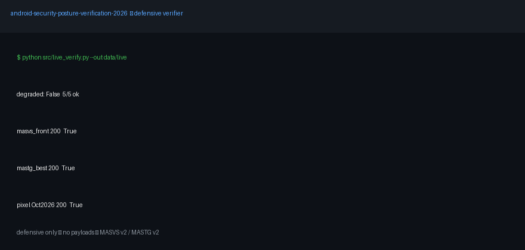

From a 2015 playbook to what actually holds on modern Android. Static detectors + live public evidence + a chapter-to-control benchmark. No payloads. No bypasses. Just proof.
Start the interactive quizRun it in 3 commands
GitHub Pages: this file is docs/preview.html — enable Settings → Pages → Deploy from a branch → main → /docs, then open /preview.html.

Flags debuggable releases, backup posture, cleartext, missing explicit export, unguarded exports, broad URI grants. Launcher-aware. Links every finding to a fix.
Finds unsafe storage habits and points to DataStore + Keystore, scoped storage, and backup-rule curation. Catches deprecated wrappers.
Static Network Security Config check: cleartext policy, pin-set presence, user-CA trust. No interception. Backend guidance via standard web controls.
Fetches only public standards/docs/bulletins, stores status + excerpt + date. If offline, marks results degraded instead of guessing.
Every legacy chapter gets one verdict: obsolete, superseded, defensive-only, restricted, or excluded — with evidence source.
Synthetic weak/hardened fixtures, pytest suite, Docker verifier. Re-run in minutes without privileged access.
| You are… | Use it to… | Start with… |
|---|---|---|
| Beginner (first Android security repo) | Learn what actually matters in 2026 without dangerous tutorials | Beginner guide + quiz Level 1–2 |
| Student / interview prep | Speak precisely about exported components, storage, backup, network posture | Quiz Level 2–3 + mapping table |
| App developer | Harden your own manifest, storage, network config before release | Run auditors on your own app (authorized only) |
| Security reviewer | Baseline an app against MASVS controls with traceable evidence | Mapping CSV + live snapshot + detectors |
| Researcher (PhD seed) | Extend with temporal benchmarks, wrapper-churn, primitive A/B studies | README §6 + METHODOLOGY.md |
pip install -r requirements.txt
python src/live_verify.py --out data/live
python -m pytest -q
# containerized:
docker compose up --build verifierUse only on apps you own or are authorized to test. See ETHICS.md. Dynamic interception and bypass work are out of scope by design.
| Legacy topic | 2026 verdict | Do this instead |
|---|---|---|
| Implicit exported defaults, old file paths | Partially obsolete | Explicit export everywhere; scoped storage; verify on current AVD |
| 2014 Top-10 + unmaintained automation | Taxonomy superseded | MASVS controls → weakness IDs → atomic tests + demos |
| Cleartext prefs / DB / backup unpack flows | API deprecated | DataStore + Keystore; backup rules; posture check only |
| Exported-component issues as a class | Still real, defensive-only | Detect + guard with signature permissions + input validation |
| WebView file access, sensitive logging | Still real in parts | Disable file access, validate URLs, strip sensitive logs |
| Proxy-everything + bypass-as-routine | Restricted to own apps | Config review + authorized backend testing only |
| Malware building, lock bypass, device exploitation | Excluded | Patch promptly, change defaults, coordinated disclosure |
Answer in the page. Explanations appear after each choice. Score levels: 0–3 Explorer · 4–6 Practitioner · 7–8 Professional.
docs/preview.html and docs/media/demo.gif on main.main · Folder: /docs → Save. Wait ~1 min.https://<you>.github.io/<repo>/preview.html. Share that link — readers see this page, not raw markdown.Custom domain (optional): Pages → Custom domain → add DNS CNAME → Enforce HTTPS. Project page stays free.
No. Everything here runs on synthetic fixtures + public docs. Use a dedicated test device only if you later do authorized dynamic work.
No. Detection + hardening only. Interception, payloads, and bypasses are excluded and blocked by an automated gate.
A claim counts when it has a live fetch (date + status + excerpt) or a passing test. Otherwise it is marked unverified.
Yes — finish the quiz at Professional level and be able to trace one finding from detector → fixture → fix → standard.